PRO
곧 출시 FileDesk Pro가 곧 출시됩니다. 출시 일정과 가격은 이 사이트에서 알려 드리며, 지금 내려받을 수 있는 것은 일반판입니다.
FileDesk Pro 소개 영상 (영어)
화면 캡처와 문자 인식
화면·창·영역 또는 스크롤하는 긴 페이지를 캡처하세요. 이미지의 글자를 인식해 수정·복사하거나 임시 보관함에 저장할 수 있습니다. 인식한 글자의 번역은 macOS 14.4부터 지원합니다.

화면 녹화
화면·창·영역을 선택해 MP4로 녹화하세요. 시스템 소리와 마이크를 각각 켜고 끌 수 있고, 시작 지연은 0~300초로 설정할 수 있습니다.

주석·스탬프·모자이크
캡처 미리보기에서 편집을 열고 펜·화살표·도형·텍스트를 추가하거나 이미지를 자르세요. 왼쪽에서 평면·입체 스탬프와 글자 스타일을 고르고, 오른쪽 레이어 목록에서 주석의 위치·크기·순서를 조절하세요. 워터마크, 흑백·단색 톤, 테두리와 그림자 효과도 적용할 수 있습니다.

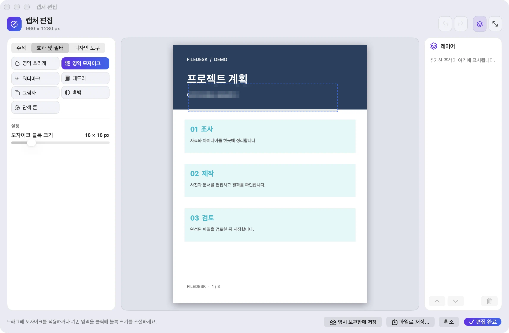
픽셀 측정과 QR 코드
픽셀 자와 각도기로 화면을 측정하세요. 화면이나 이미지에 있는 QR 코드를 읽고 결과를 복사하거나 링크를 열 수 있습니다.

클립보드와 임시 보관함
도구 막대에서 클립보드를 열고 파일·이미지·텍스트 항목을 고르세요. 스페이스바로 미리보고 위아래 화살표로 다른 항목을 확인할 수 있습니다. 다시 복사하거나 보관함에 저장하세요. 보관함에서도 선택 항목을 미리보거나 위쪽 파일 창에서 열 수 있습니다.

영상 타임라인 편집
영상·사진·오디오를 타임라인에 배치하고 전환 효과 33종 또는 컷으로 클립을 연결하세요. 자막과 음량을 조절하고, 한 클립의 여러 영역에 모자이크와 흐리기를 각각 적용할 수 있습니다.

작업 공간과 설정
시스템 도구 막대와 사용자 도구 모음을 창 가장자리에 따로 배치하세요. 사이드바의 그룹을 접거나 순서를 바꾸고, 하단의 설정에서 작업 공간을 조정할 수 있습니다.

이미지 편집·변환
미리보기에서 사진을 자르거나 회전하고, 크기를 바꾸거나 좌우·상하로 뒤집으세요. 배경이나 메타데이터를 제거하고 JPG, PNG, HEIC, WebP, AVIF 등으로 저장할 수 있습니다. 여러 이미지를 한 PDF로 묶거나 이미지 속 QR 코드도 읽을 수 있습니다.

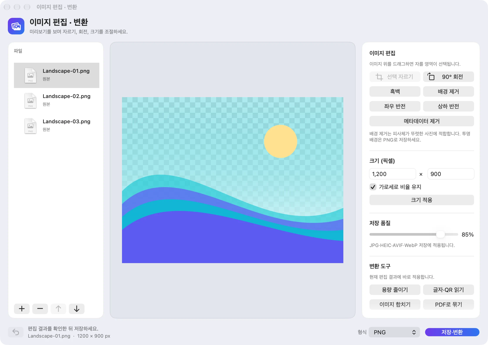
PDF 페이지·주석 편집
PDF 페이지를 재정렬·회전·삭제하거나 여러 문서를 합치고 나눌 수 있습니다. 글자, 이미지, 도형, 메모, 서명을 주석으로 추가하고 추가한 항목을 이동하거나 크기를 바꾸세요. 영역 가리기, 워터마크, 쪽 번호와 암호 설정도 지원합니다.

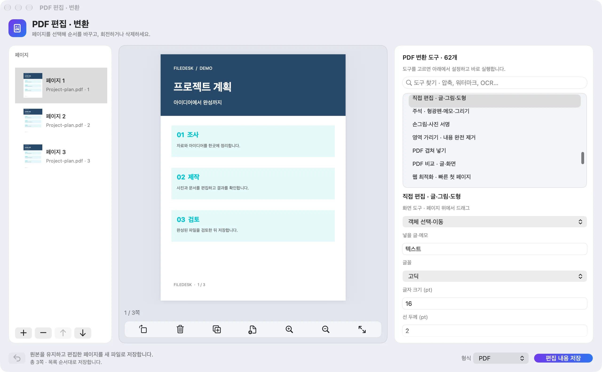
PDF 변환·인식·추가 도구
편집창에서 문서·이미지 변환, OCR, PDF/A, 웹 최적화, 메타데이터 제거, 비교·겹치기·복구를 바로 선택합니다. 스캔·카메라·화면 가져오기, 문서 묶기와 송장 자료 도구도 제공합니다.

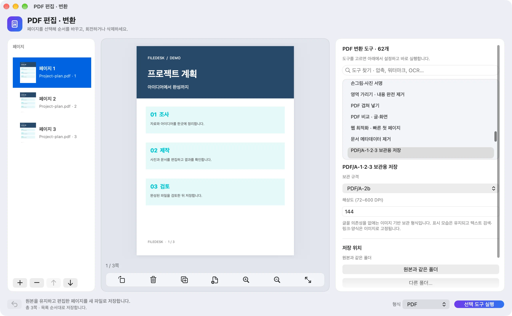
오디오·스테레오·벨소리
파형에서 구간을 남기거나 삭제하고 속도·음량·음소거를 조절합니다. 스테레오 L/R 파형을 따로 편집하고 미리듣습니다. MP3·M4A·WAV·FLAC·Opus·AIFF 또는 30초 이내 M4R 벨소리로 저장합니다. 오디오 한 채널의 구간 삭제는 싱크 유지를 위해 무음으로 남습니다.

문서·자막·일괄 작업
지원 문서의 PDF·Word·HWPX·TXT·RTF·HTML·ODT 변환과 PDF의 XLSX·PPTX 내보내기. SRT·VTT·SMI 자막 변환, 이미지·PDF OCR, 여러 파일 일괄 실행과 저장 폴더 선택을 지원합니다.

고급 압축 만들기·해제
7Z·ZIP·TAR 계열, DMG·ISO·Zstandard 등 만들기와 RAR·분할 파일·WPRESS 등의 해제. 형식별 암호·파일명 암호화·분할·압축 수준·개별 압축·검증·프리셋을 지원하며 별도 앱 설치가 필요 없습니다.

시간 제한 인터넷 공유
파일·폴더를 1분~7일 동안 인터넷 링크로 공유하고 즉시 중지할 수 있습니다. 공유 목록, 접속 시각·IP·브라우저·전송 상태와 CSV 기록을 제공합니다. 받는 사람은 앱 설치 없이 브라우저로 받습니다. 보내는 Mac에는 Tailscale 로그인과 최초 Funnel 승인이 필요합니다.

원하는 터미널 앱 선택
설치된 iTerm2·Ghostty·Warp 등이나 직접 지정한 터미널 앱으로 폴더와 SSH 작업을 엽니다. 일반판은 macOS 기본 Terminal만 사용하며, 다른 앱 선택은 Pro 활성화 후 제공됩니다.

사진 콜라주
사진을 최대 20장까지 넣으세요. 2장 이상이면 격자 36종을 고를 수 있고, 모자이크 24종과 앨범 24종도 제공합니다. 사진마다 액자 50종과 마스크 50종을 조합하고 글자를 더할 수 있습니다.

영역별 테마와 나만의 팔레트
추천 테마 8개에서 시작하거나 이미지에서 색을 추출하세요. 라이트·다크 모드별로 창, 사이드바, 도구 막대 두 개, 파일 창 여섯 개, 보관함, 선택 영역의 색과 투명도를 정할 수 있습니다. 자주 쓰는 색과 팔레트의 이름을 바꾸고, .fdtheme 파일로 저장하거나 다시 불러오세요.

사용자 도구 모음
앱·폴더·파일·웹 주소를 버튼으로 등록해 한 번에 여세요. Pro를 활성화하면 복사한 그림을 붙여넣어 버튼 아이콘으로 쓸 수 있습니다.

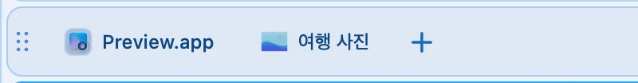
버튼 추가와 아이콘 변경 방법
자주 쓰는 앱·폴더·파일을 런처로 끌어오세요. ＋ 버튼의 ‘파일·폴더·앱 추가’로 선택해도 됩니다. 버튼을 클릭하면 등록한 항목을 엽니다. 웹 주소도 바로가기로 추가할 수 있습니다.
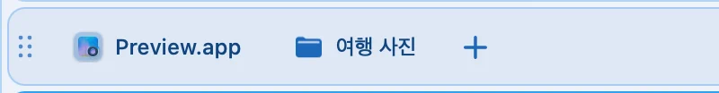
사용자 도구 모음에 등록한 여행 사진 폴더와 ＋ 버튼 브라우저에서 원하는 아이콘 이미지를 우클릭해 ‘이미지 복사’를 선택하거나, 이미지 앱에서 그림을 복사하세요. FileDesk의 사용자 도구 모음 버튼을 우클릭해 ‘아이콘 변경…’을 열고 ‘붙여넣기’ 또는 ⌘V를 누릅니다.

‘아이콘 변경’ 창에서 복사한 풍경 이미지가 표시된 미리보기 미리보기에서 그림을 확인하고 ‘적용’을 누르세요. 이미지 비율을 유지해 버튼에 맞춰지며 다음부터 그 그림으로 항목을 열 수 있습니다. 같은 창에서 이모지나 이미지 파일을 선택하거나 ‘기본 아이콘’으로 되돌릴 수 있습니다.

다운로드 폴더 정리
다운로드에 쌓인 PDF, 사진, 영상 등을 종류별 폴더로 모으세요. 이동할 위치를 먼저 보고 필요한 파일만 선택할 수 있습니다.

캡처에 확대 렌즈와 라벨 넣기
작은 글씨는 렌즈로 확대하고, 주목할 곳은 반투명 도형으로 표시하세요. 무늬 테이프에 짧은 설명을 적을 수도 있습니다.

파일 비교와 폴더 병합
같은 이름의 파일은 수정 시각을 보고 더 최신인 원본만 복사할 수 있습니다. 두 파일의 내용이 같은지 확인할 때는 체크섬을 비교하세요.

사진·음악 정보로 이름 바꾸기
사진에는 촬영일과 카메라 모델을, 음악에는 트랙 번호와 곡명을 파일 이름에 넣으세요. 같은 이름이 나오면 번호를 붙일 수 있습니다.
폴더 권한과 서버 연결
FileDesk Pro를 기본 폴더 뷰어로 지정하고, 자주 쓰는 서버 공유 폴더를 앱을 열 때 다시 연결하세요. 로컬 파일과 폴더의 접근 권한도 편집할 수 있습니다.
파일 창 안에서 터미널 열기
폴더를 보면서 같은 FileDesk 창에서 명령을 실행하세요. 로컬 폴더와 SSH 연결을 각각 세션으로 열고 전환할 수 있습니다.

Pro 1.67 · 캡처 마크업과 클립보드
도형에 글자를 넣고 원하는 글꼴로 꾸미세요. 유리 링·젤 광택 스탬프와 확대경을 고르고, 테두리·그림자·색조를 미리보기에서 바로 확인하세요.

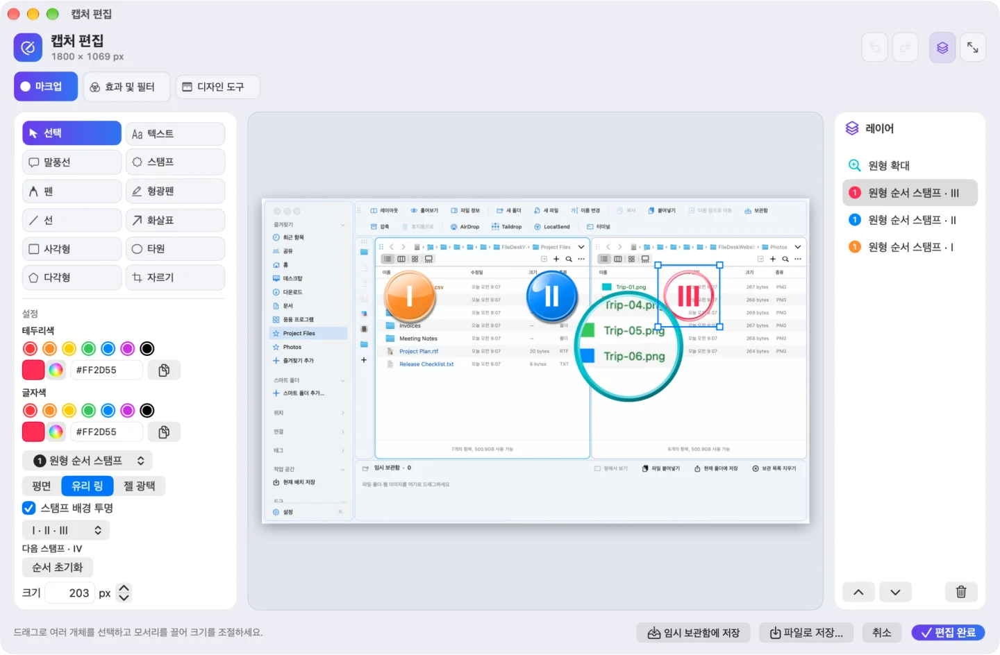
Pro 1.68 · 사용자 스탬프와 움직이는 GIF
원형·사각 사용자 스탬프에 문자, 이모티콘, 복사한 이미지를 넣으세요. 드래그로 비율을 정하고 Shift를 누르면 정원이나 정사각형이 됩니다.

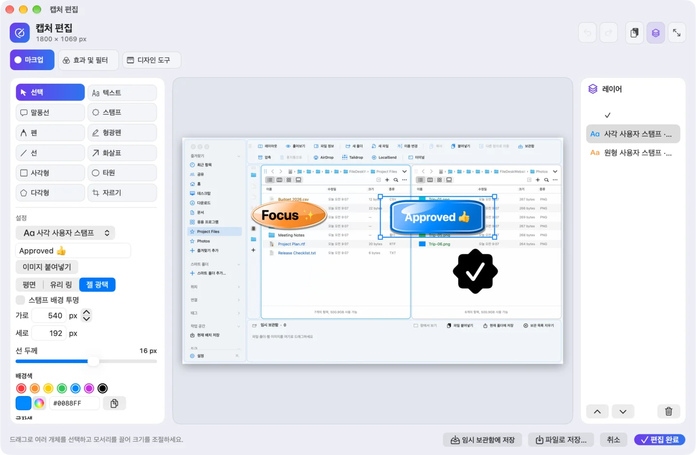
Pro 1.69 · 스크롤 캡처와 창별 갱신
위·아래 스크롤 캡처에서 연속 프레임을 이어 붙입니다. 창 선택 캡처의 창 목록이나 Tab으로 겹쳐 있는 창을 고를 수 있습니다.
파일을 복사·이동·삭제하거나 임시 보관함에 놓으면 실제로 바뀐 위치를 보여 주는 패널의 하단 정보만 갱신합니다.
메인 창, 편집창, 클립보드와 도구 창은 모서리를 끌어 크기를 조절합니다. 왼쪽 위의 macOS 기본 버튼으로 닫기, 최소화, 최대화할 수 있습니다. 클립보드 목록은 빨간 버튼이나 하단의 ‘닫기’로 닫습니다.
임시 보관함은 파일 이름을 아이콘 아래에 표시합니다. 항목이 여러 줄에 걸치면 세로로 스크롤할 수 있습니다.
설정 → 일반에서 ‘FileDesk를 기본 폴더 뷰어로 사용’을 켜세요. 끄면 Finder로 돌아갑니다.

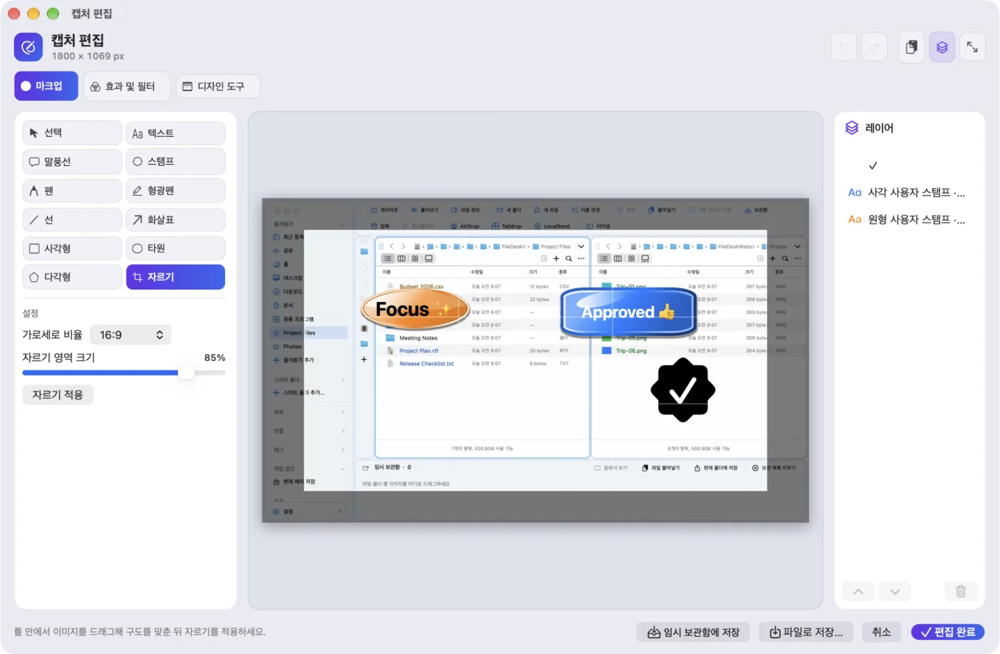
Pro 1.70 · 패널별 크기 조절과 보관함 복사
네 패널이 만나는 중앙 손잡이를 끌면 너비와 높이를 함께 조절합니다. 각 경계의 손잡이를 끌면 맞닿은 패널만 조절됩니다. 가로·세로 경계가 같은 교차점에서 어긋나면 직사각형을 유지하도록 교차 경계를 맞춥니다.
임시 보관함의 파일을 우클릭해 복사하거나 다른 앱으로 끄세요. 이미지와 텍스트는 해당 형식을 받는 편집기에 바로 붙여넣을 수 있습니다.

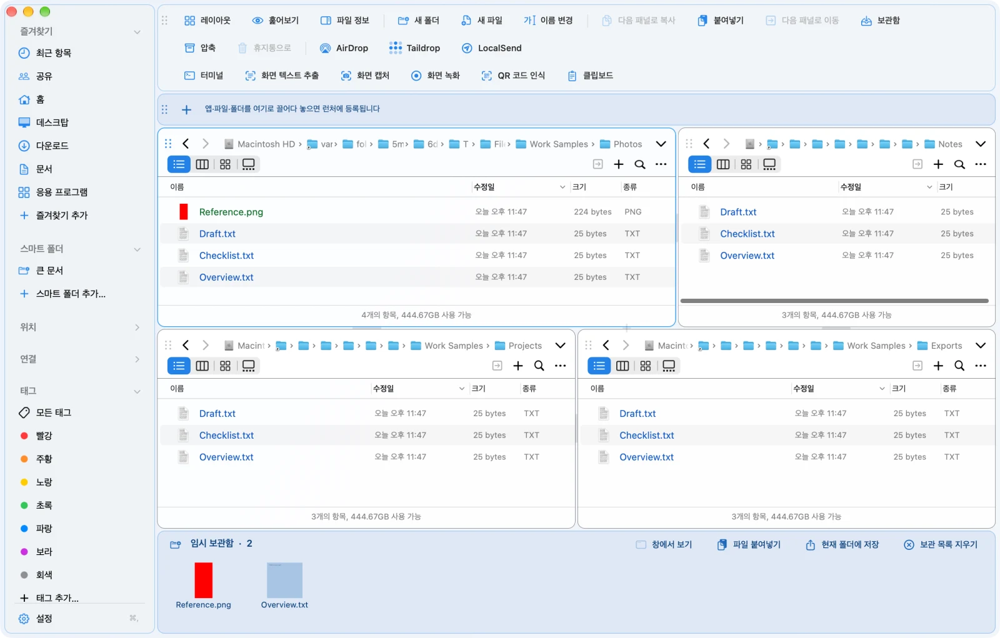
Pro 1.71 · 캡처 결과와 기본 폴더 뷰어
화면 캡처와 텍스트 추출을 마치면 결과 창이 앞에 표시됩니다.
macOS가 기본 폴더 앱 변경을 거절하면 설정 → 일반에서 ‘Finder에서 보기’ 요청만 FileDesk로 보내도록 선택할 수 있습니다.
사이드바의 연결 또는 이동 메뉴에서 화면 공유 (VNC)를 열고 전용 주소 칸에 상대 컴퓨터의 주소를 입력하세요.

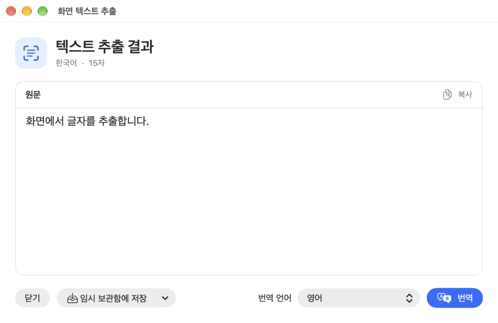
Pro 1.72 · 스탬프·왼쪽 메뉴·VNC 주소록·파일 테마
순서 스탬프 아래의 맞춤 스탬프를 더블클릭해 글자를 넣고 글꼴·크기·스타일을 정하세요.
브라우저나 다른 앱에서 가져온 이미지를 맞춤 스탬프, 도형 또는 테이프에 끌어 놓거나 선택 후 붙여넣으면 한가운데에 들어갑니다. 이미지와 도형은 함께 이동합니다.
설정 → 왼쪽 메뉴에서 카테고리의 ‘항목’을 열고 각 항목의 표시 여부를 정하세요. 카테고리를 접었다 펴도 선택이 유지됩니다.
자주 연결하는 컴퓨터의 이름·주소·접속 계정을 주소록에 저장하세요. 암호 저장을 선택하면 암호는 이 Mac의 키체인에 보관됩니다. 로그인 창이 뜨면 주소록에서 복사한 암호를 붙여넣으세요.
설정 → 화면 모양 → 파일 테마에서 여러 .fdtheme 파일을 한꺼번에 가져오세요. 목록에서 테마를 고르면 앱 색상이 바로 바뀝니다. 관리 메뉴에서 새로 저장하거나 기존 테마를 업데이트하고, 저장한 항목을 삭제할 수 있습니다.

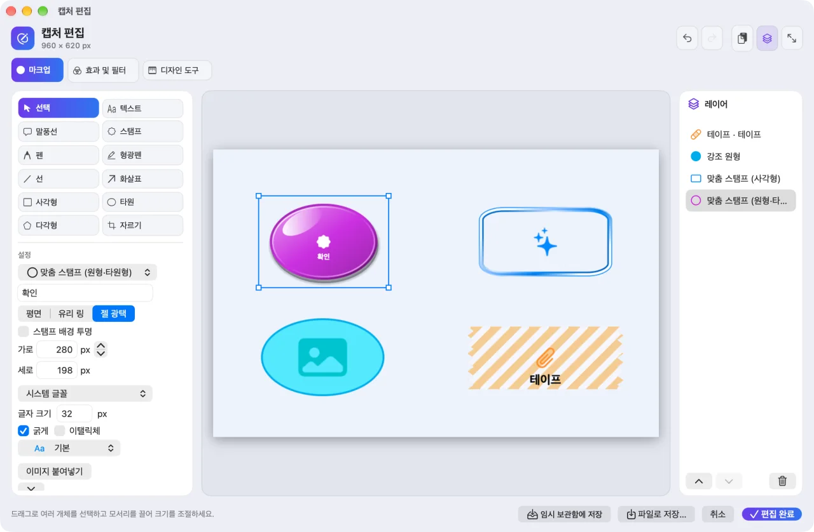

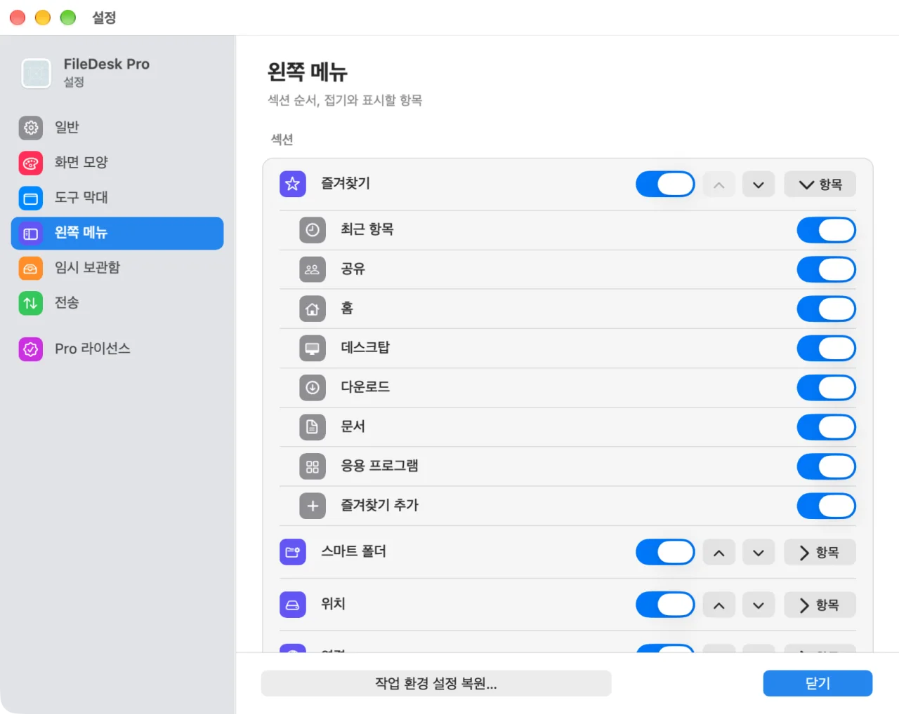

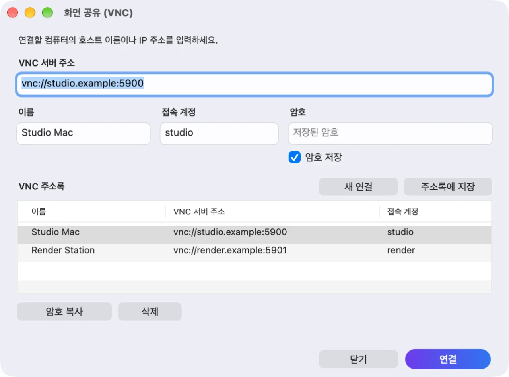

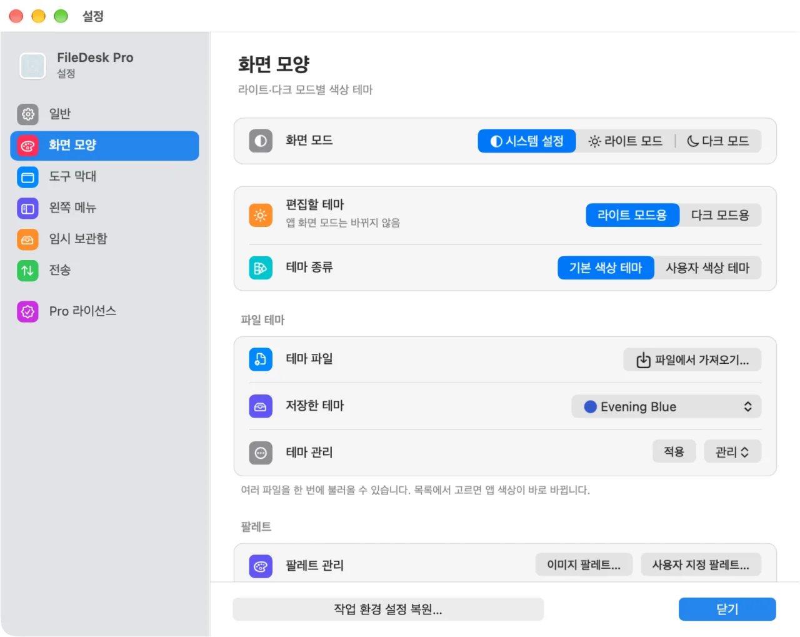
Pro 1.73 · 이미지 파일 바로 편집
캡처 편집 상단의 ‘이미지 파일 열기…’를 누르거나 ⌘O를 눌러 이미지 파일을 새 편집 창에서 여세요. 도구 → 캡처 및 녹화 → 화면 캡처의 더 보기 메뉴에서도 열 수 있습니다.

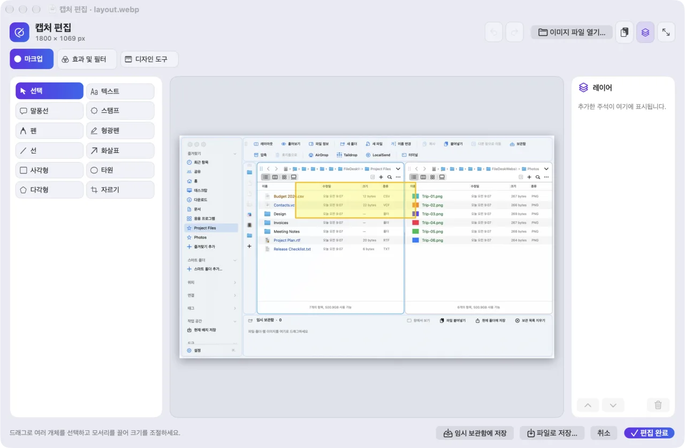
Pro 1.74 · 캡처 레이어와 작업 공간
캡처 편집 상단의 불러오기 아이콘이나 ⌘O로 이미지 파일을 현재 캔버스의 레이어에 추가하세요. 배경을 포함한 각 레이어는 눈 아이콘으로 숨기거나 다시 표시할 수 있습니다.
파일로 저장할 때 일반 이미지 형식은 화면에 보이는 내용만 내보냅니다. 캡처 프로젝트 (.fdcapture)는 배경, 편집한 레이어와 숨김 상태를 보존하며, 불러오기 아이콘으로 다시 열 수 있습니다.
설정 → 화면 모양에서 클라우드·서버 아이콘의 원래 색상이나 테마 색상을 선택하세요. 사이드바 섹션 제목의 아이콘은 흰색과 테마 색상 중에서 고를 수 있습니다. 화면 공유 메뉴는 VNC로 표시됩니다.
폴더 아이콘 색상은 지정한 색 그대로 또는 기존 음영으로 표시할 수 있습니다. 별도 임시 보관함은 ‘보관함 창 열기’에서 엽니다.
도구 막대에서 오른쪽 클릭 후 ‘구분 막대 추가’를 선택하세요. 구분 막대는 도킹 방향에 맞춰 회전합니다. 사용자 색상 테마에서 지정한 구분 막대 색상은 테마 파일에도 저장됩니다.
시스템 도구 막대, 런처, 임시 보관함 손잡이를 끌어 원하는 가장자리로 옮기거나, 다른 패널의 앞이나 뒤에 놓으세요. 같은 줄의 경계를 끌어 크기를 바꾸고 두 번 클릭해 길이를 맞춥니다. 보이지 않는 아이콘은 패널 안에서 스크롤해 볼 수 있습니다.

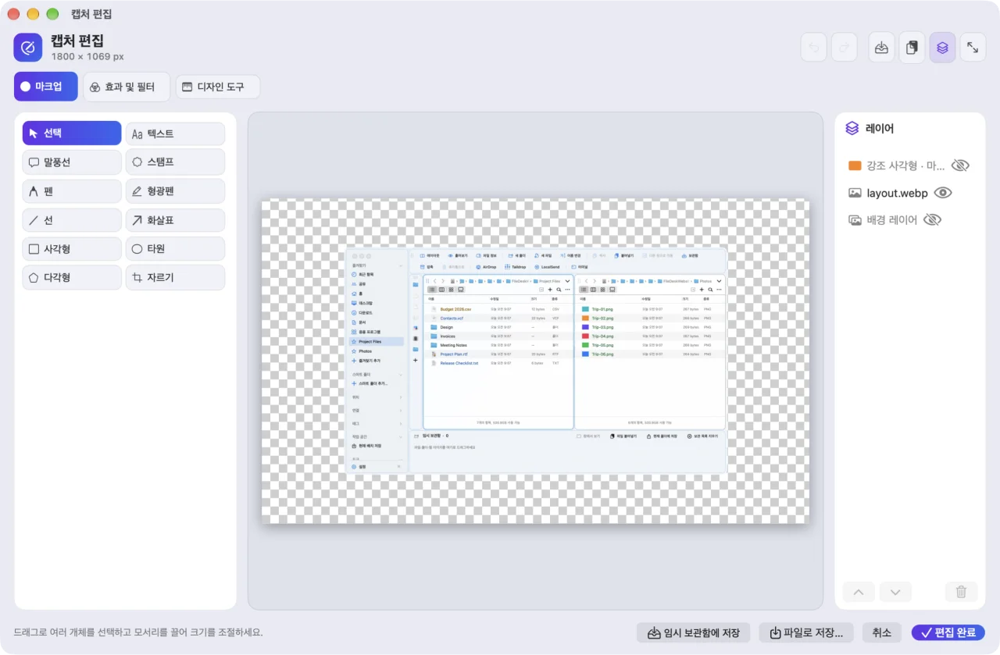

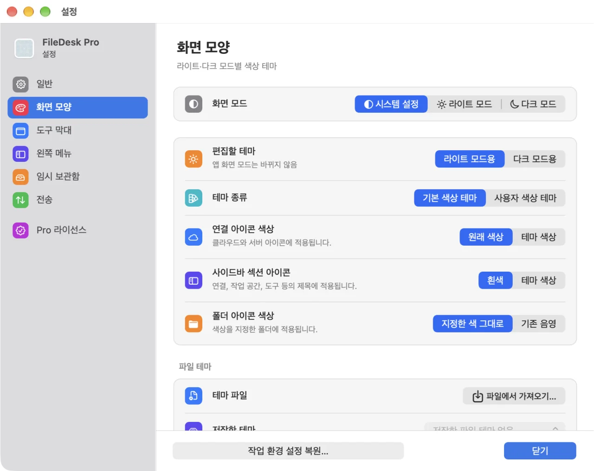
Pro 1.75 · 상단 도구 막대 정렬과 이동
상단의 시스템 도구 막대와 런처는 아이콘이 한 줄에 들어갈 때 가운데 정렬됩니다. 패널 앞 손잡이를 약 2초간 누르면 선택 윤곽이 나타납니다. 누른 상태에서 끌어 옮기세요.

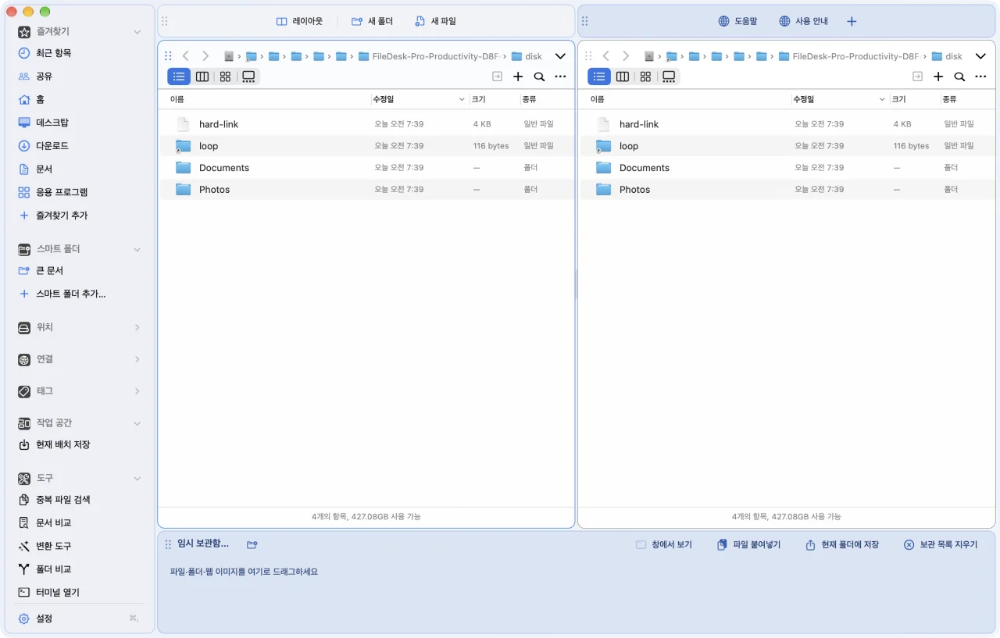
Pro 1.76 · 패널 이동 손잡이
시스템 도구 막대, 런처, 임시 보관함 앞의 점을 2초간 누르면 쥔 손 모양으로 바뀝니다. 누른 상태로 패널을 원하는 위치에 끌어 놓으세요. 놓거나 취소하면 점 모양으로 돌아갑니다.

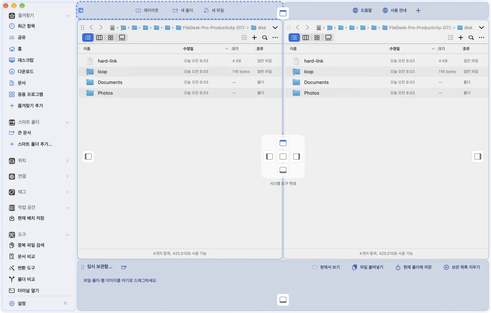
Pro 1.78 · 연속 캡처와 화면 녹화
캡처 설정에서 자동 저장 폴더, 파일 이름 규칙, 자동 복사와 고정 크기를 정하세요. 최근 캡처 목록에서 여러 장을 선택해 탭으로 열거나 한 PDF에 모을 수 있습니다.

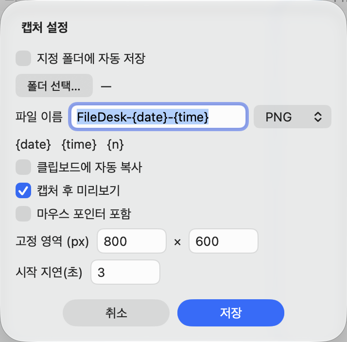
Pro 1.79 · 보관함 조작과 패널 배치
보관함에서 항목을 우클릭해 복사, 붙여넣기, 이동, 삭제를 선택하세요. 보관함 폴더 사이에서는 드래그로 옮기고 Option을 누른 채 드래그하면 복사합니다. 우클릭 메뉴의 ‘아이콘만 보기’와 설정의 ‘임시 보관함 이름 표시’를 따로 바꿀 수 있습니다.

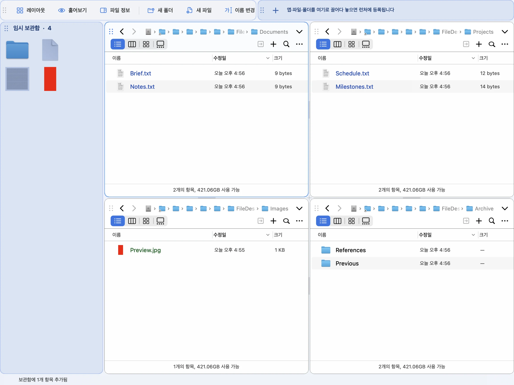
Pro 1.80 · Finder 도구 막대와 검색
사이드바의 최근 항목과 공유를 눌러 Finder의 Spotlight 목록을 엽니다. 각 파일 패널에서 보기 방식과 그룹을 바꾸거나, 파일을 선택한 뒤 공유 버튼으로 macOS 공유 메뉴를 여세요.

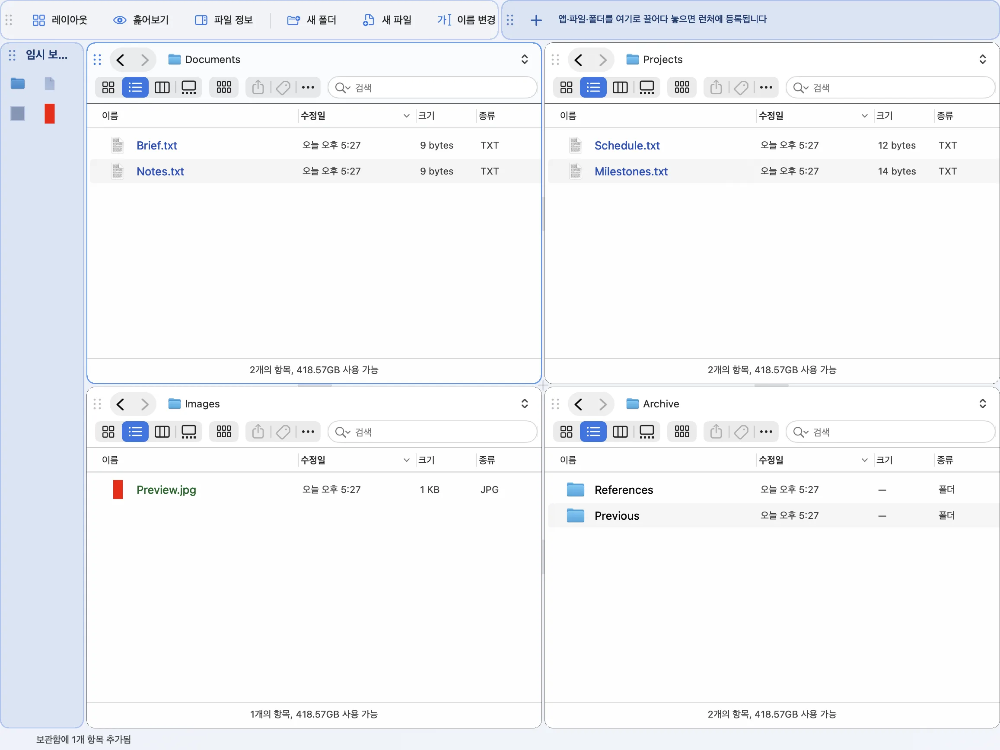
Pro 1.81 · 패널 하단의 경로와 파일 정보
각 패널 하단 왼쪽의 뒤로·앞으로 버튼으로 이동하거나 경로의 폴더를 눌러 여세요. 파일 개수와 사용 가능 공간은 오른쪽에 표시됩니다. 상단 보기 버튼 줄의 맨 오른쪽 화살표는 현재 폴더의 하위 폴더를 엽니다.

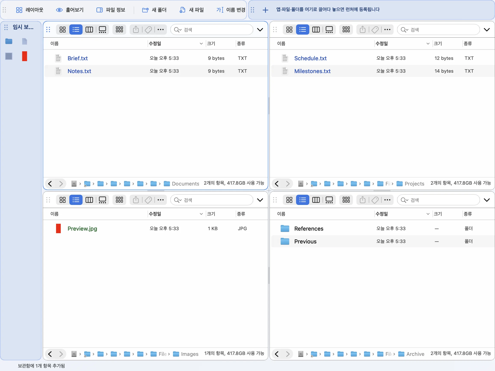
Pro 1.82 · 패널별 색상과 배경 이미지
설정 → 화면 모양 → 패널 모양에서 패널을 선택하세요. 파일 패널의 상단 도구 막대, 파일 영역, 하단 경로·정보의 색을 따로 지정하고, 각 패널의 테두리와 선택 색상도 조절할 수 있습니다.

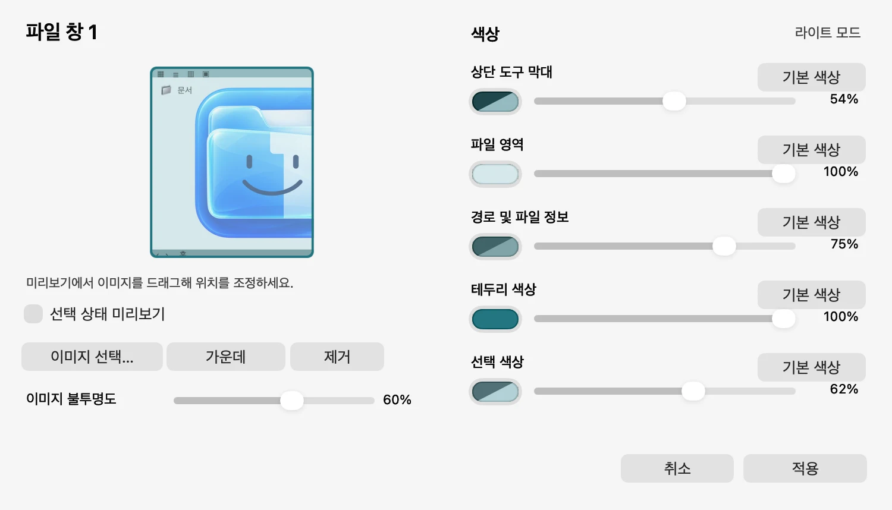
Pro 1.83 · Finder 방식의 패널 도구 막대와 검색
상단에서 폴더 이름과 이동 버튼, 네 가지 보기 방식, 그룹·정렬, 공유·태그·더 보기, 검색을 사용할 수 있습니다. 패널이 좁으면 도구를 다음 줄에 표시합니다. 파일 경로와 정보는 하단에 표시됩니다.

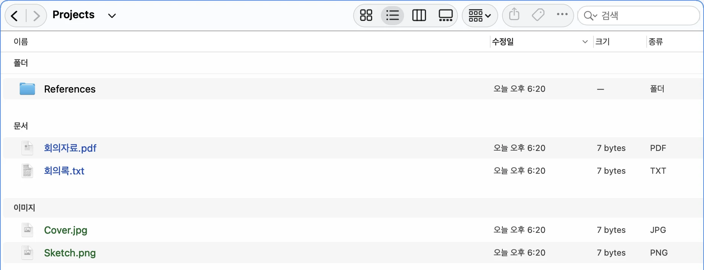
Pro 1.84 · 다운로드 폴더의 Finder식 목록 보기
다운로드 폴더를 열면 파일과 폴더가 추가된 날짜의 최신순으로 함께 표시됩니다. 오늘, 어제, 이전 7일, 이전 30일 구역 아래에 오래된 항목은 월 또는 연도별로 모입니다.

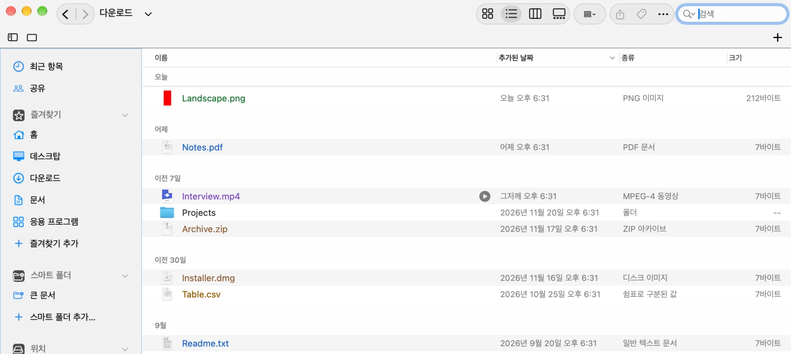
Pro 1.85 · 이름별 그룹의 첫 글자 표시
이름으로 그룹화하면 Sample과 sketch가 같은 S 구역에 표시됩니다. 한국어 화면에서도 영문 이니셜과 한글 첫 글자를 그대로 읽을 수 있습니다.

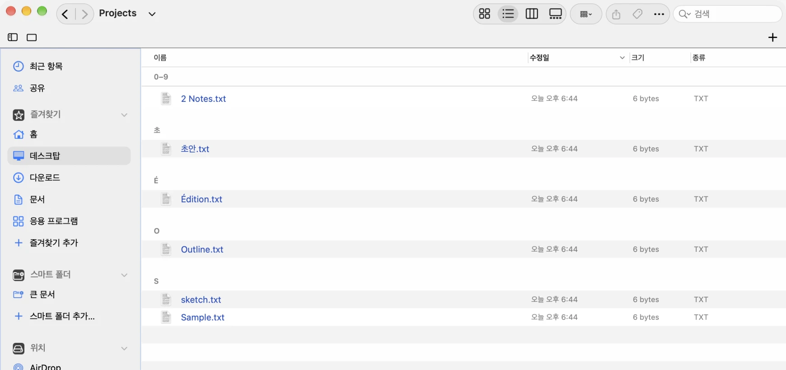
Pro 1.92 · 아이콘 묶음과 리퀴드 글라스
도구 막대 아이콘은 역할별로, 사용자 도구 막대의 앱·폴더·파일·웹 바로가기는 종류별로 둥근 캡슐에 묶입니다. 아이콘을 추가하거나 빼면 캡슐 크기가 따라 바뀝니다. 캡슐과 리퀴드 글라스 중에서 고르고, 도구 막대와 파일 창 버튼에 각각 다른 색을 지정할 수 있습니다.

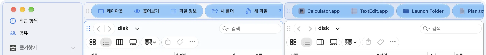
지원 범위와 이용 조건
PDF/A와 영역 가리기는 페이지를 이미지로 고정합니다. EPUB은 텍스트 기반, SVG는 이미지 기반이며 변환 시 원본 서식 보존에는 한계가 있습니다. 암호 해제에는 필요한 암호가 있어야 합니다. 송장 XML은 XRechnung 형식이며 한국 전자세금계산서 발행 기능은 아닙니다.
압축 옵션은 형식에 따라 다릅니다. RAR·WPRESS는 해제만 지원합니다. 독립적으로 사용 가능한 외부 엔진을 각 라이선스에 따라 포함합니다.
공유하는 Mac에 Tailscale 설치·로그인과 최초 Funnel 승인이 필요합니다. Mac을 켜고 FileDesk·Tailscale과 인터넷 연결을 유지해야 합니다. 접속 기록은 실명 확인이 아니며, 만료되거나 중지되어도 이미 받은 사본은 회수되지 않습니다.